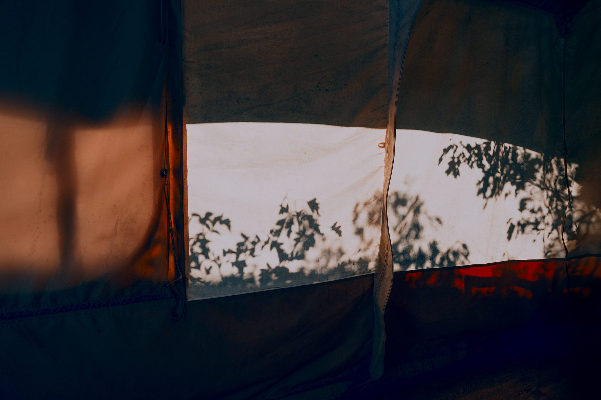
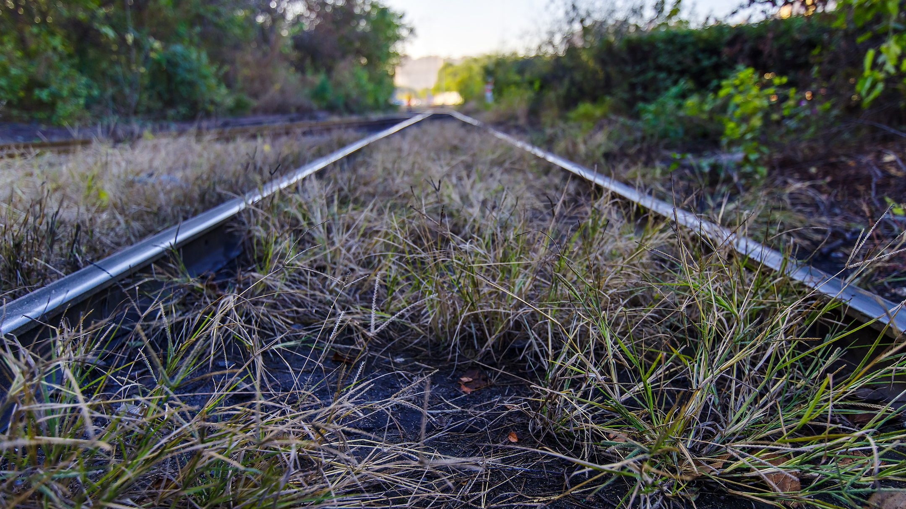
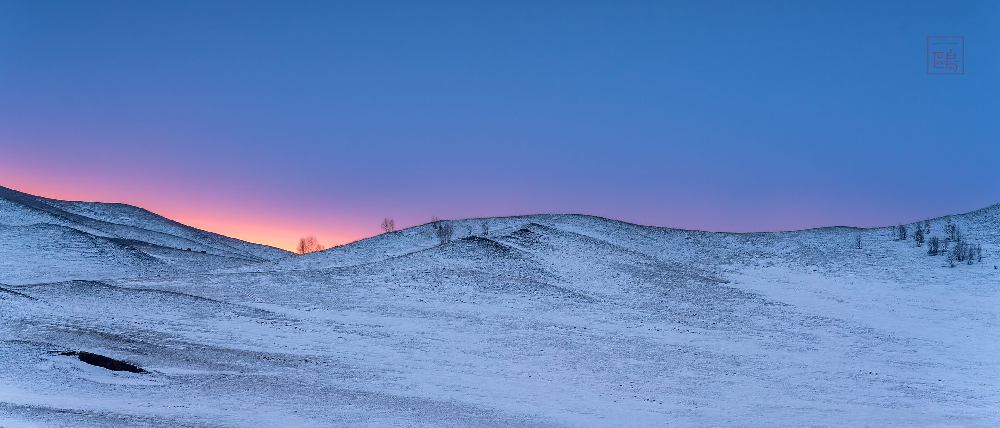

祭塞上嘯 （2018）
塞上浮雲已望穿，昨時吟嘯化寒蟬。
遠行耐得風蕭瑟，冷對群鴉噪暮天。
己亥秋分步韵聽雪樓主人 （2019）
歲華猶幾許，斯世已秋分。
鶴唳惊迷亂，蛄鳴若罔聞。
低吟詩未了，独酌酒初醺。
自此雲湖客，閒鷗不逐群。
浣溪沙 · 自題攝影 （2020）
波影粼粼夕照曚。
吹沙撲面凛秋風。
臨津斂步嘆途窮。
瀚水沉湮如夢黯，
斜曛盡染斷腸紅。
鴻泥留印灞橋東。
浣溪沙 · 自題攝影 （2020）
墨染蓬山一萬重。
寒烟暮色入遙空。
天涯何處問仙蹤？
雲起簫吟天籟裡，
風來葉落夕陽中。
依稀秦鳳舞蒼穹。
浣溪沙 · 自題攝影 （2020）
雲上蒼山雪欲融，
飛花起處已朦朧。
斯人無語寄幽悰。
最憶當時臨海月，
豈堪此際下西風。
残舟難載别愁濃。
十月初七坐雨感懷 （2020）
木葉飛紅寒意微，哀鳴孤雁去遲遲。
濁醪抵得黃昏雨，縱有神傷醉不知。
蘇幕遮 · 秋雨 （2021）
暮山雲，梧葉雨。
頻叩書窗，點點聲如訴。
落寞栖遲人凝佇。
望極秋空，盡在寒煙浦。
意何多，思幾許。
逝水流光，總惹紛繁緒。
乍冷初宵心自語。
惟問西風，吹盡池荷否？
庚子寒露 （2020）
一飲秋滋味，瓢樽誰與同。
廓周惟落木，天末有孤鴻。
興廢尋常劫，窮通六秩翁。
明朝霜色裏，且看遠山楓。
念奴嬌 （2020）
黃粱過眼 問光鮮盛際 竟成何物
逆轉蹄輪行沮洳 紫氣且憑雞血
楚竞纖腰 秦迷鹿馬 九域牆如鐵
高羅雲網 幾人堪脫驚魘
滿耳逐逐讒蠅 蟆猶在井 殘蜩聲聲噎
蜃景狂花終亂眼 隱隱烽狼戎鉞
蒼狗須臾 杳茫黄鹤 何事摧心折
徒然傷酒 此時杯冷腸熱
夢裏探梅 （2020）
殘冬羈旅意遲遲，覓得寒芳綴玉枝。
額畔幽馨風靜夜，襟前疏影月明時。
揉香一瓣凝清酒，翦雪三分入小詩。
將意語花花不語，半醒聽得洞簫吹。

辛丑中秋步韻酬聽雪樓主人 （2021）
樓頭長佇倚，晚霽復斜曛。
僻野菊垂露，雲涯雁逐群。
枯榮天自隔，冷暖世間分。
行客傳嘉句，殷殷感意勤。
寒露前三日傘下聽雨 （2021）
輕霾冷雨正綢繆，傘底無需更拭眸。
滿巷沉雷驚落葉，半園晦色掩重樓。
槐柯舊夢知何在，蝸角閑愁至此休。
看盡烟雲風過耳，方知苟且便无忧。
辛丑霜降步韻友人 （2021）
嚴霜凌故國，歲序幾堪驚。
赤馬恣衰世，玄鵝豈瑞徵。
何須嗟白首，但恐負平生。
去去歸無路，風前一水橫。
遣懷 （2021）
殘夢今幾許，幽懷秋漸深。
雨來雲著意，潮去水無心。
落葉從誰掃，粗茶且自斟。
市朝光怪事，懶作短長吟。

感事 （2021）
望斷西風百草枯，悲鴻遠影盡寒蕪。
誰家奇絕丹青手，猶寫繁花入畫圖。
辛丑霜降步韻聽雪樓主人 （2021）
昨宵霜葉落，寒氣下幽州。
一菊猶擎露，群芳已怯秋。
驚心聞過雁，託意伴浮鷗。
依舊矜毛羽，何堪付濁流。
南歌子 （2021）
欲雪千山黯。
臨風萬木寒。
蒼蕪盡處是幽燕。
爭忍歲終日暮倚欄干。
侵夜冰殊凛，
牽愁酒未殘。
且将遙念付孤眠。
夢逐雲涯倦鶴向梅邊。

雪國夜行 （2021）
螢燈曳影入冰途，皓雪鋪銀映望舒。
誰灑西風三萬里，幻成晶澈一穹廬。
元旦 （2022/1/1）
去水流雲一縷烟，恍然滄海又桑田。
晨昏便是尋常日，難得胡塗不記年。
大隱 （2022）
大隱隱於酒，深霾掩蟻樓。
冬瘟猶黯黯，春信已幽幽。
杯盡愁難遣，詩成意未休。
堪嗟江海夢，塵裡鏽吳鈎。
步韻酬答小呂探花君 （2022）
鎖城那晚雪銷魂，今復何酸雨又昏。
已誤荼蘼焉足道，幸無縞袂夜敲門。
壬寅大暑遣懷 （2022）
際此天聾地啞辰，世疴無望待盧秦。
嘯歌不屑時流眼，寥落先侵遲暮身。
漫説飛星能寄意，徒憂滄海更揚塵。
深宵且忍靑蟬怨，聊伴燈前獨坐人。
籌劃許久之攝影行程因清零防控管制於登機前突遭取消凡此一而再再而三不勝鬱鬱 （2022）
苟且流年問幾多，詩心遠意盡銷磨。
衢憑核碼行無處，海斷天槎奈若何。
劫歷泥塗肆苛虎，徒憂荆棘掩銅駝。
虛窗微度闌珊雨，趺坐蝸廬唱踏莎。
感事（聞西安封城) （2022）
罹劫三秦苦，經霜兩鬢寒。
何堪空作賦，爭忍獨憑欄。
侵夜風殊凛，澆愁酒未殘。
老來心已木，無語話長安。
北行道中 （2025）
輕駕孤行意若何，霜餘殘葉漸無多。
途塵漫逐雲邊雁，羈夢聊依塞上駝。
方覺薄寒更節序，可堪蕭瑟下關河。
秋山已共夕霞老，豈必西風嘆鬢皤。